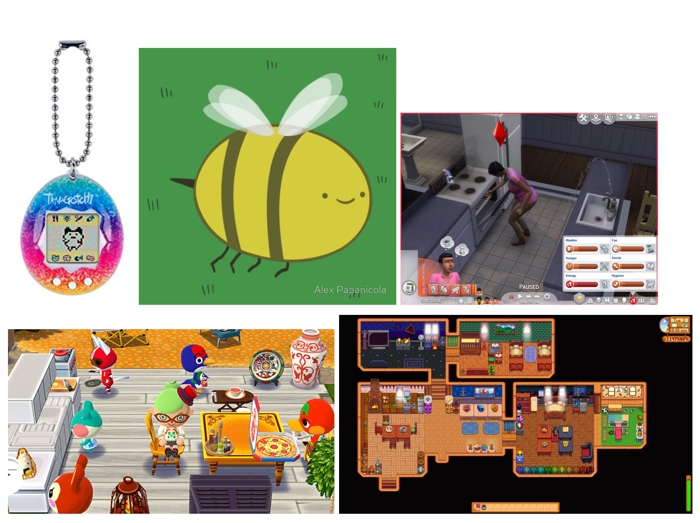
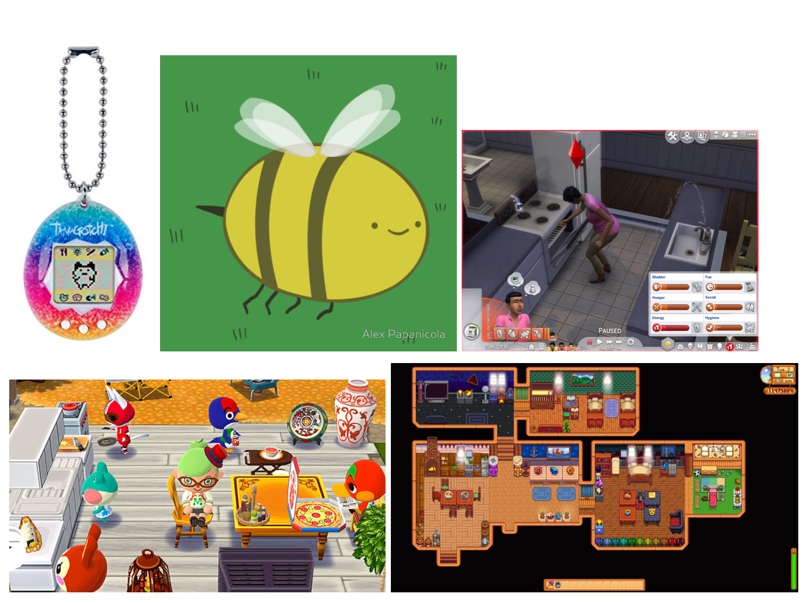
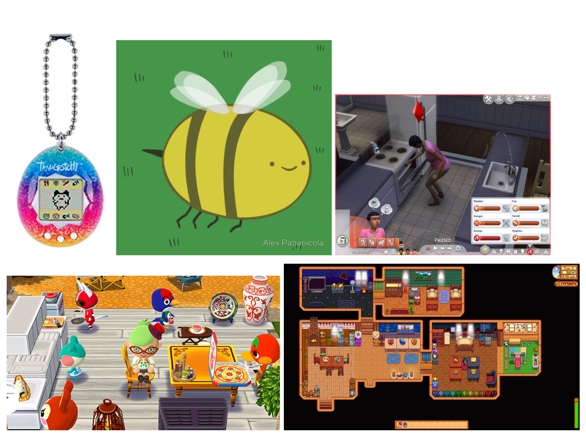
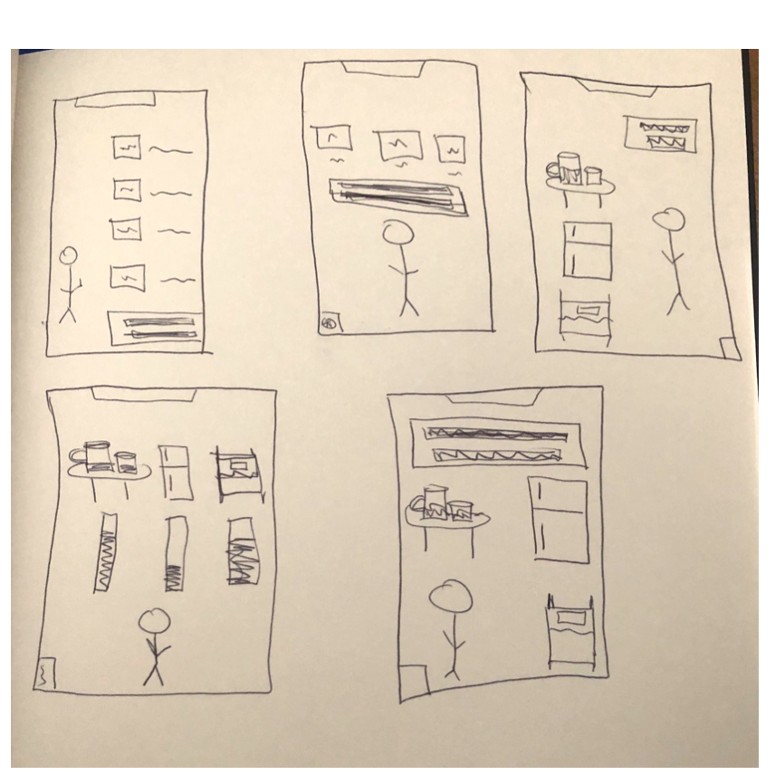
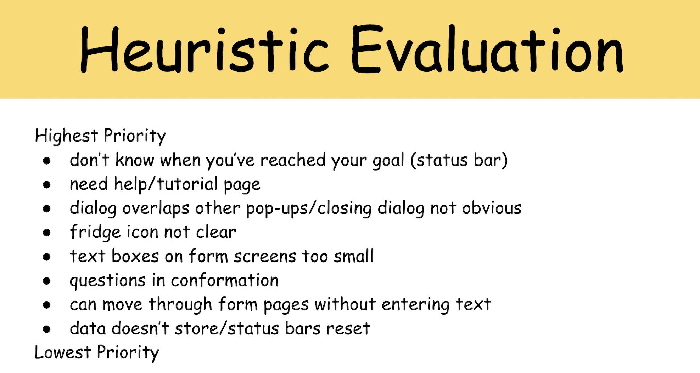
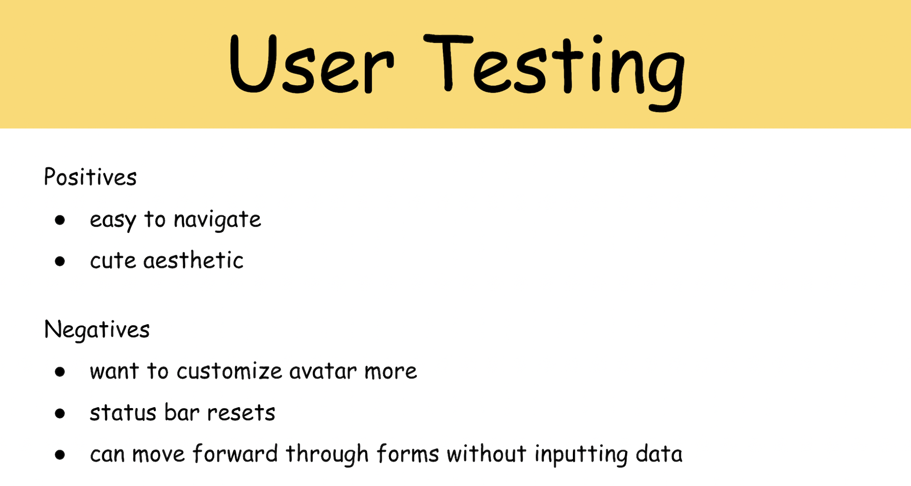

BeeWell
Goal
Based on the given brief: To design and build an application that can run on a desktop browser.
My team's idea: To create a mobile app that would help our target audience (young adults) maintain a healthier lifestyle.
My team's idea: To create a mobile app that would help our target audience (young adults) maintain a healthier lifestyle.
Tools
JavaScript, HTML, CSS, PowerPoint, Pen and Paper (Prototypes)
Project Proposal
For the final project of my undergraduate Human Computer Interaction class, a partner and I had to develop an application of our choice.
After some brainstorming, we decided to create an app that would help young adults just like us take better care of themselves.
However, we wanted to create something that went beyond just offering basic reminders.
We proposed a more engaging and motivational experience that would have users take care of an avatar, who acted as an extension of the user, to remind them to also care for themselves. The following are some quick sketches I made to help us get the basics of our idea across for our proposal to our professor.
We proposed a more engaging and motivational experience that would have users take care of an avatar, who acted as an extension of the user, to remind them to also care for themselves. The following are some quick sketches I made to help us get the basics of our idea across for our proposal to our professor.
Conceptual Design
After submitting our project proposal, we created Metaphors and Scenarios for the User and for our main tasks of Sleeping, Eating, and Drinking Water.
We then separately found our visual inspiration and had a meeting to discuss where we saw our design going.
By focusing on where our ideas overlapped as well as any points we each felt were important, we were able to move forward on the same page.
 


Sketches and Storyboarding
Because of the smaller scope of this project as well as our more specific target audience, we only created a Primary Persona.
We then developed Scenarios, empathizing with that persona, and used those deliverables as inspiration as we explored potential ideas by each sketching a proposed layout for our key screen (where the user gives their avatar food, water, and tells it to sleep).


Paper Prototyping and Low-Fidelity Testing
With a clearer idea of our screens and core features, we created paper prototypes and split up to perform in-person, moderated, Think Aloud tests with potential users.
Because of our tight timeline, and considering the minimalist functionality associated with this app, using low-fidelity prototypes were an effective and efficient way of testing out our initial ideas.


Before performing these tests, we created tasks to cover our key functionalities:
We each took notes during testing and reconvened to, together, establish the following key takeaways:

Before performing these tests, we created tasks to cover our key functionalities:
- Move through the welcome form screens, enter values for how much sleep you want to get and how much food and water you want to eat and drink.
- Give your avatar water.
- Change the number of hours of sleep you want to get to 9 hours.
- Feed your avatar.
We each took notes during testing and reconvened to, together, establish the following key takeaways:
High-Fidelity, Clickable Prototype
As we were approaching our final round of testing, we felt it would be beneficial to have users interact with a more finished product on an actual phone.
We took the feedback from our initial testing to make changes as we created a high-fidelity prototype.
As required by the course, we had to make this prototype accessible via a web browser (and not using prototyping software such as Figma), so we coded it in JavaScript, HTML, and CSS.
Heuristic Evaluations and User Testing
In order to iteratively improve our product, we performed more user tests as well as heuristic evaluations
(the "experts" were our peers from the course which meant we were also able to act as "experts" and perform heuristic evaluations for other apps).
We prioritized our results and made changes to our high-fidelity prototype. The severity of our issues was mainly determined by frequency, criticality, and ease of use.
When making changes, we also considered our deadline and weighed how long it would take to make a change with that change's overall impact. We also took note of positive feedback to make sure any adjustments we did make did not impact what users liked about our app.
We prioritized our results and made changes to our high-fidelity prototype. The severity of our issues was mainly determined by frequency, criticality, and ease of use.
When making changes, we also considered our deadline and weighed how long it would take to make a change with that change's overall impact. We also took note of positive feedback to make sure any adjustments we did make did not impact what users liked about our app.


Final Product
After iteratively improving our application, we ended with our final prototype
which can be explored in your browser or can be viewed via the demo video below.